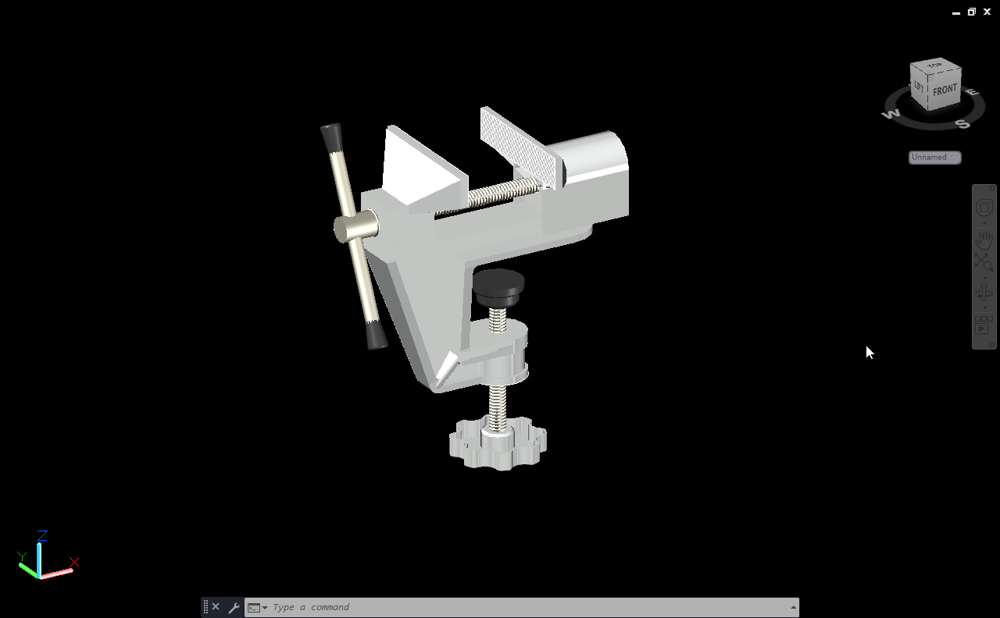
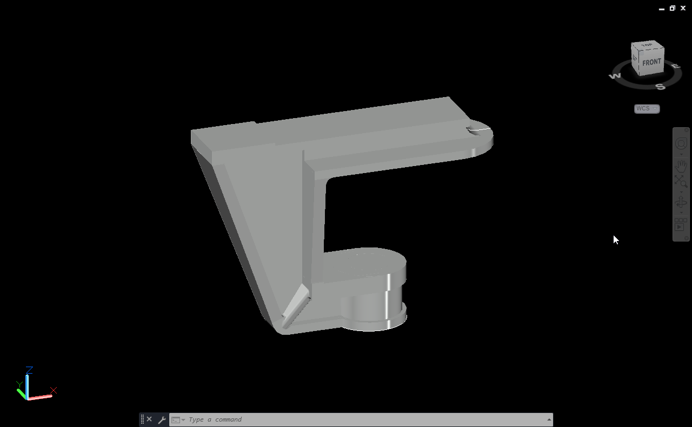
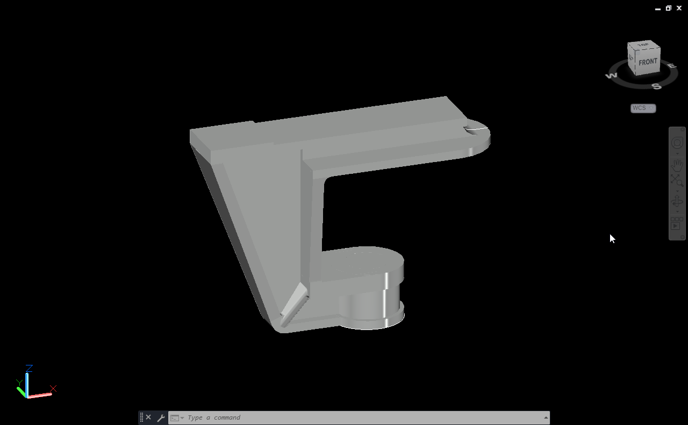

Mini bench vice
This project is a complete 3D model of a mini bench vice made to understand part modeling and assembly in mechanical design. I created each component separately including the base, fixed jaw, movable jaw, screw, and handle, and then combined them to form the full assembly.
About Project
I started by modeling the main body with proper dimensions, then worked on the screw and handle that control the jaw movement and all other parts listed below one by one.

 

This project helped me learn how different parts fit and move together in a mechanical system. It improved my understanding of accuracy, alignment, and how 3D assemblies are built step by step. Seeing the final model come together smoothly was very satisfying and gave me a better idea of real workshop tools. You can check the final assembly preview of the Mini bench vice below.